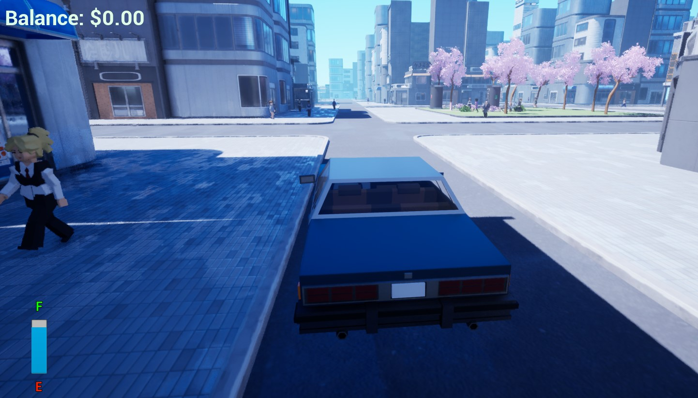

Wacky Taxi (Mar - May 2024)

For my final semester in my first year, I needed to create a game using Unreal Engine across 8 weeks. I had complete creative freedom to make any type of game and so I chose to make a Taxi Driving simulator.
Wacky Taxi is a game about being the only taxi in the city and having the responsibility to take every passenger to where they want to. It is also important to take into consideration how long the journey is taking as the price of a taxi fare is based around the amount of time the passenger is in the vehicle for so the player must consider this before they grow impatient and leave.
Key Mechanics
Driving
This was my first time trying out driving mechanics in a game and so for this I installed the experimental Chaos Vehicle plugin. This plugin was likely the biggest challenge I faced in Unreal Engine so far as it takes into account a lot of variables and is very different to use compared to the regular Character Movement Component. The variables it uses are very unfamiliar to me as they often relate to terminology used for tuning cars which I am far from an expert in.
Driving Passengers
Normal NPCs will walk along the street whereas other NPCs will stand still waiting to be picked up by the player. Once the player is stopped and chooses to pick them up, they will walk towards the car and get inside showing a new HUD displaying all the necessary information relating to how much money was earned, where the player needs to take the passenger and how much patience the character has left.
Patience + Reward System
The patience meter always starts at full whenever a passenger is picked up and this will be used to calculate a tip at the end of the journey. As the player takes the passenger on the journey, they can choose to drive for longer to make the fare higher but this will result in the patience dropping causing a lower tip so the player is required to try and balance how long the passenger is in the car for.
Fuel
As the player drives, they slowly deplete fuel and need to recover it at the petrol station with money earned from delivering passengers. The player can also choose to upgrade their tank to hold more fuel but this also means that it will cost more to refill.